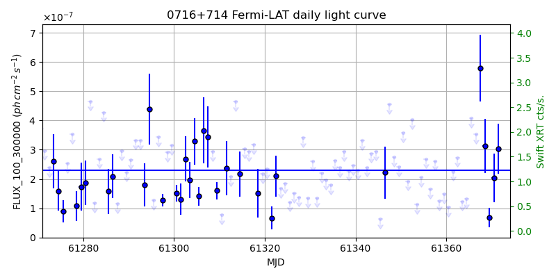
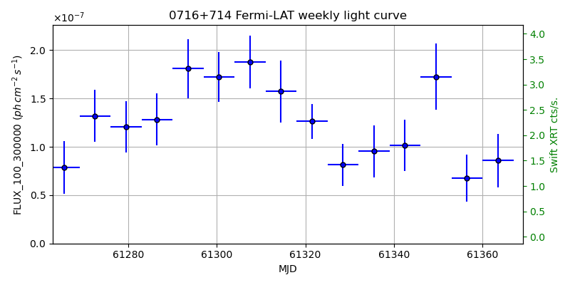
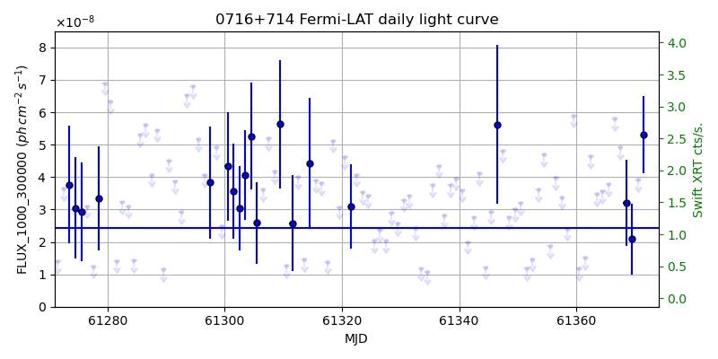

LAT Lightcurve site: https://fermi.gsfc.nasa.gov/ssc/data/access/lat/msl_lc/source/0716p714
Swift site: https://www.swift.psu.edu/monitoring/source.php?source=S50716+714
NED: Query
Time of last update of this page: UT: 2026-11-28 16:18 (MJD: 61372.679)
| Property | Value |
|---|---|
| R.A. | 7:21:43.20 |
| Dec. | 71:21:00.0 |
| z | 0.310 |
| 3FGL SpectrumType | LogParabola |
| 3FGL PL Index | |
| 3FGL Flux_100_300000 | 2.31e-07 1 / (s cm2) |
| 3FGL Flux_1000_300000 | 2.44e-08 1 / (s cm2) |
| 3FGL Flux >200 GeV | 6.00e-11 1 / (s cm2) |
| 3FGL Extrap. Crab >200 GeV | 0.25 |
| 3FGL Flux After EBL Absorption >200GeV | 1.88e-11 1 / (s cm2) |
| 3FGL EBL Crab Fraction >200GeV | 0.08 |

| MJD | dMJD | Flux | dFlux | Frac3FGL | FracCrab>200GeV | EBLFracCrab>200GeV |
|---|---|---|---|---|---|---|
| 61367.50 | 0.50 | 5.80e-07 | 1.14e-07 | 2.51 | 0.64 | 0.20 |
| 61368.50 | 0.50 | 3.14e-07 | 9.31e-08 | 1.36 | 0.35 | 0.11 |
| 61369.50 | 0.50 | 6.84e-08 | 3.41e-08 | 0.30 | 0.08 | 0.02 |
| 61370.50 | 0.50 | 2.04e-07 | 8.34e-08 | 0.88 | 0.22 | 0.07 |
| 61371.50 | 0.50 | 3.03e-07 | 8.55e-08 | 1.31 | 0.34 | 0.11 |

| MJD | dMJD | Flux | dFlux | Frac3FGL | FracCrab>200GeV | EBLFracCrab>200GeV |
|---|---|---|---|---|---|---|
| 61335.50 | 3.50 | 9.54e-08 | 2.71e-08 | 0.41 | 0.11 | 0.03 |
| 61342.50 | 3.50 | 1.01e-07 | 2.67e-08 | 0.44 | 0.11 | 0.03 |
| 61349.50 | 3.50 | 1.73e-07 | 3.44e-08 | 0.75 | 0.19 | 0.06 |
| 61356.50 | 3.50 | 6.77e-08 | 2.43e-08 | 0.29 | 0.07 | 0.02 |
| 61363.50 | 3.50 | 8.58e-08 | 2.78e-08 | 0.37 | 0.09 | 0.03 |

| MJD | dMJD | Flux | dFlux | Frac3FGL | FracCrab>200GeV | EBLFracCrab>200GeV |
|---|---|---|---|---|---|---|
| 61367.50 | 0.50 | 4.92e-08 | 0.00e+00 | 0.00 | 0.00 | 0.00 |
| 61368.50 | 0.50 | 3.20e-08 | 1.33e-08 | 1.31 | 0.33 | 0.10 |
| 61369.50 | 0.50 | 2.08e-08 | 1.08e-08 | 0.86 | 0.22 | 0.07 |
| 61370.50 | 0.50 | 3.93e-08 | 0.00e+00 | 0.00 | 0.00 | 0.00 |
| 61371.50 | 0.50 | 5.31e-08 | 1.18e-08 | 2.18 | 0.56 | 0.17 |
| MJD | dMJD | Flux | dFlux | Frac3FGL | FracCrab>200GeV | EBLFracCrab>200GeV |
|---|---|---|---|---|---|---|
| 61335.50 | 3.50 | 6.64e-09 | 2.77e-09 | 0.27 | 0.07 | 0.02 |
| 61342.50 | 3.50 | 1.29e-08 | 0.00e+00 | 0.00 | 0.00 | 0.00 |
| 61349.50 | 3.50 | 1.39e-08 | 4.73e-09 | 0.57 | 0.15 | 0.05 |
| 61356.50 | 3.50 | 8.68e-09 | 3.40e-09 | 0.36 | 0.09 | 0.03 |
| 61363.50 | 3.50 | 8.65e-09 | 3.32e-09 | 0.35 | 0.09 | 0.03 |
--------------------------------------------------------- Using user-supplied coords: 7:21:43.20 71:21:00.0 2000 --------------------------------------------------------- FLWO UT night of: 2026-11-29 Local Sid. @ Midnight: 04:08 Sunset (-15.0) (local, UT): 18:31 01:31 Sunrise (-15.0) (local, UT): 05:53 12:53 Moonrise (local, UT): 21:57 04:57 Moonset (local, UT): Moon phase: 0.72 --------------------------------------------------------- AzTime LSID UT Obj_el Obj_az Mn_el Mn_az Sep. --------------------------------------------------------- 18:31 22:39 01:31 18.5 14.7 -32.9 32.1 54.0 19:01 23:09 02:01 20.2 16.5 -29.4 38.9 54.1 19:31 23:39 02:31 22.1 18.1 -25.4 45.0 54.3 20:01 00:09 03:01 24.2 19.4 -21.0 50.6 54.4 20:31 00:39 03:31 26.4 20.5 -16.2 55.6 54.5 21:01 01:09 04:01 28.7 21.4 -11.1 60.2 54.6 21:31 01:39 04:31 31.0 21.9 -5.4 64.5 54.8 22:01 02:09 05:01 33.4 22.1 0.4 68.5 54.9 22:31 02:39 05:31 35.8 22.0 5.8 72.2 55.0 23:01 03:10 06:01 38.2 21.5 11.6 75.8 55.1 23:31 03:40 06:31 40.5 20.5 17.5 79.4 55.2 00:01 04:10 07:01 42.7 19.1 23.6 82.9 55.3 00:31 04:40 07:31 44.7 17.3 29.7 86.5 55.5 01:01 05:10 08:01 46.5 14.9 35.8 90.3 55.6 01:31 05:40 08:31 48.0 12.2 42.0 94.4 55.7 02:01 06:10 09:01 49.1 9.0 48.1 99.1 55.8 02:31 06:40 09:31 49.9 5.5 54.2 104.7 55.9 03:01 07:10 10:01 50.3 1.8 60.1 111.7 56.1 03:31 07:40 10:31 50.3 358.0 65.6 121.1 56.2 04:01 08:10 11:01 49.9 354.3 70.5 134.7 56.3 04:31 08:40 11:31 49.1 350.8 74.0 154.7 56.4 05:01 09:11 12:01 47.9 347.7 75.2 181.1 56.6 05:31 09:41 12:31 46.4 344.9 73.6 206.8 56.7 05:53 10:02 12:53 45.1 343.2 71.0 221.2 56.8 --------------------------------------------------------- Source never above horizon of 55.0 deg. Dark hours >55 deg.: 0.00